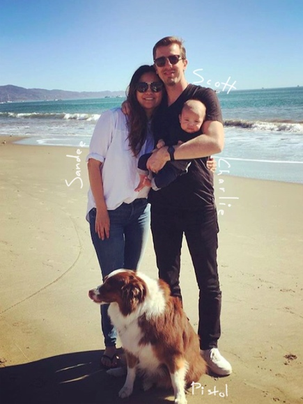

Basecamp,
"Try to do the things that you're incapable of. If you think you're unable to work for the best company in its sphere, make that your aim." - Paul Arden
That quote is from Paul Arden's book "It's not how good you are, it's how good you want to be." And that quote describes both you and me.
Basecamp is the best company in its sphere. You wrote a web framework that powers probably hundreds of thousands of small and medium business web applications. And you continue to write common sense and forthright business advice that inspires many.
I'm not sure I'm capable of working at Basecamp, but I want to be, and because "it's not how good you are, it's how good you want to be".
That is why I am applying to work with you. I want to become one of the best, by working with the best.
A little about me. I grew up in a small Southern California town called Perris. My family were farmers and then eventually in the real estate business.
The first programming I ever did was on a TI-83 calculator, but I didn't realize it at the time. It was not until I was in college and given 5mb of free webspace that I started to delve into programming or even technology, for that matter.
You see, I was not from a technical or professional family. I went off to college to study business so I could return back to Perris and help the family small business.
I was entrepreneurial though. That's why, the last month before the end of my freshman year, when I had discovered I could write HTML and build a webpage, I placed an ad with the newspaper - "$500 Website: I will build, host, and maintain your website".
I was studying abroad the next year and needed travel money. I slaved away on that first site, making the equivalent of only about $2/hr, but I loved all the time I spent on it. It was such a creative process of daily invention and daily discovery. I spent all my spare time as a kid building things with legos. This was legos on a grand scale. Anything was possible.
Over the next few summer months, I did the foot work to secure more clients as well as upgraded my skills to an understanding of Wordpress and Wordpress templates. By the time the new school year started, I had the freedom to work remotely while studying abroad, the clients to keep some cash flow, and an ever growing passion for writing code.
I could go on from here, but suffice it to say that learning to program opened lots of opportunity for me. If my application makes it pass the first round, I would enjoy sharing more with you. I love hearing origin stories of how individuals got into technology. We are the lucky ones.
Some harder facts. I think it is now time I give you a few harder facts about my experience, so you can decide if you want to take a look at my code and projects.
With the above list, I'm trying to show you that I've written a lot of code, sometimes questioned the status quo by building my own contrarian solutions, and also involved myself in the community. I think these are signals of an independent but empathetic programmer.
Some of my projects. I've built lots of projects over the years. Like most people, many of these were not completed, but some I saw through to the end.
I think that is all I can tell you for now without boring you. Hopefully I haven't already. :) You can see more of my work on my website at http://mot.la.
Thank you for taking the time to read through my application. I hope something caught your eye or at the very least was not boring.
I am entering my next 10 years of programming, and I think it will be a promising 10 years. I would love to spend much of those years at Basecamp learning, struggling, and striving with the best.
Warm regards,
Mot (Scott Motte)

P.S. Here is my resume document